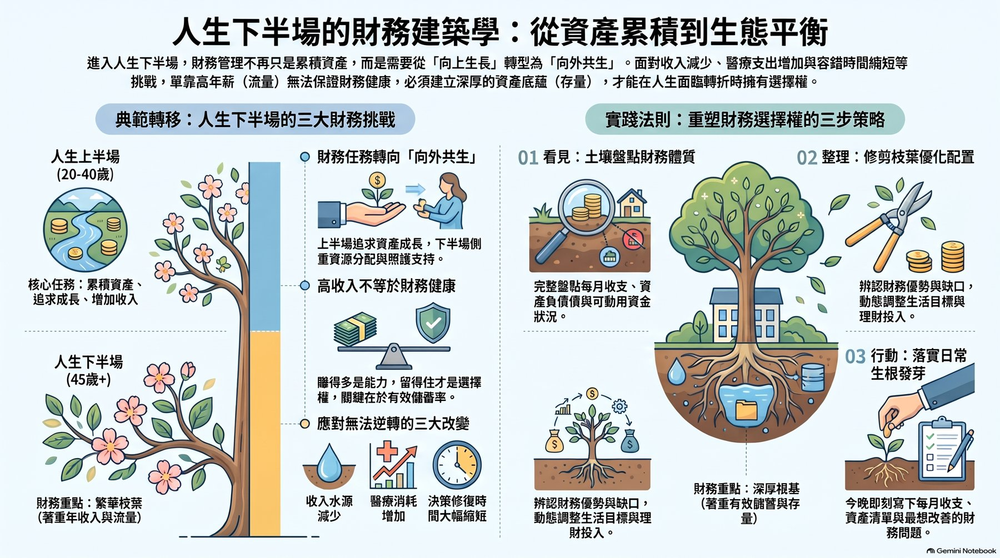
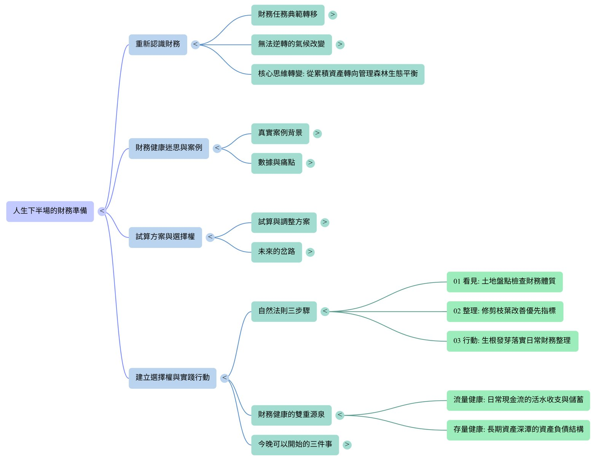

人生下半場，財務不只是把錢變多，而是讓收入、資產和生活能互相支持。單靠高收入不能保證財務健康，還要有穩穩的資產底蘊，人生轉彎時才有選擇權。

🔍 點圖放大年輕時做錯決定，還有時間慢慢修；人生下半場，容錯的空間變小了。
老師分享了一個真實家庭：年薪超過 300 萬、有房有車，卻在 50 歲想轉職時發現，財務資源還需要重新安排。
面對人生的岔路（轉職、退休、照顧家人），先試算：現在的收入、支出與資產，能不能支持我想走的那條路？
不夠的話，就調整方案：延後幾年、調整支出、提高儲蓄，或重新配置資產。先看清楚，才有得選。
完整盤點每月收支、資產負債與可動用資金。
辨認財務優勢與缺口，動態調整生活目標與理財投入。
把整理變成日常習慣，一步一步落實。
流量讓生活過得下去，存量讓人生轉彎時撐得住，兩個都要顧。
寫在這裡只會存在你自己的手機，芸琪看不到，安心寫 😊

🔍 點圖放大・人生下半場，我的「森林」裡，最需要照顧的是哪一棵樹？
・如果明天想轉彎（轉職、退休、照顧家人），我的財務撐得住嗎？
・這週，我願意先做哪一個小小的整理？
本學習包為芸琪參加 10/25 菁羚老師公開課的學習筆記整理，內容為觀念分享，不構成投資或保險建議。
——財顧芸｜家族傳承生活顧問